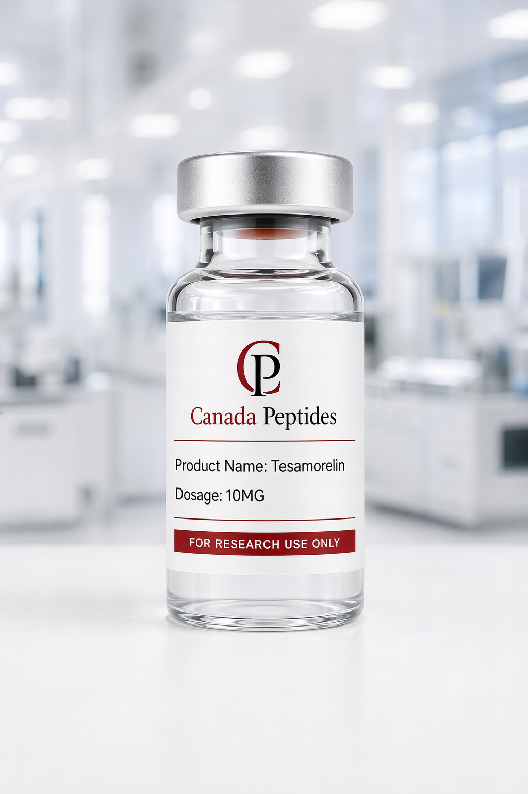
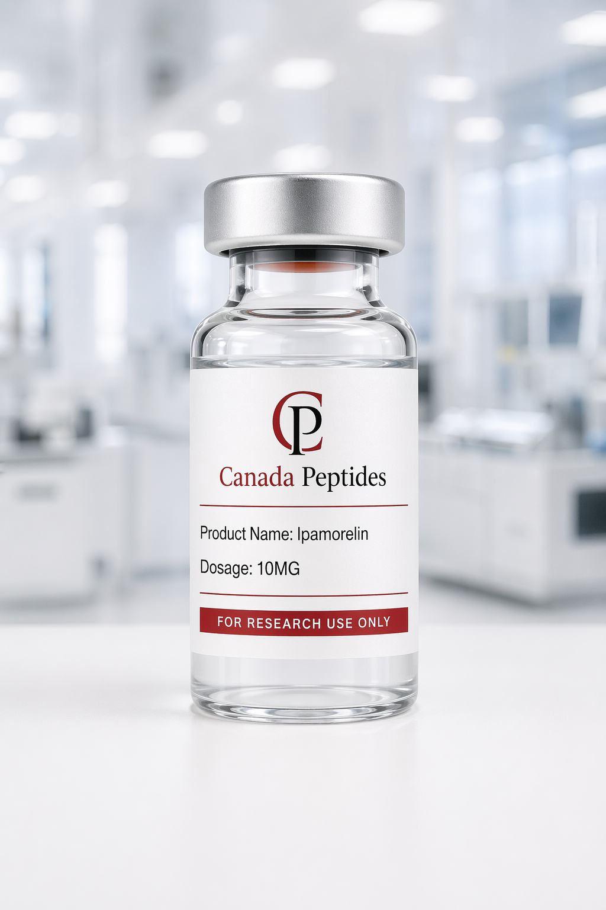
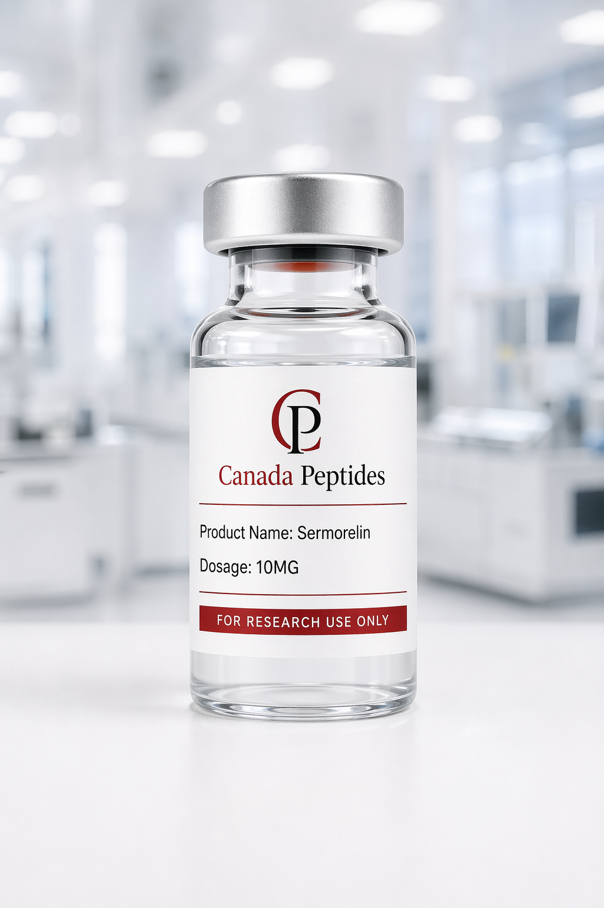

Performance
CJC-1295 10mg
Research-use-only peptide for analytical workflows, documentation, and lab evaluation.

Synthetic research peptide supplied for laboratory, analytical, and research-use-only applications.
Opens payment instructions with Tesamoralin 10mg prefilled for a faster order request.
Tesamoralin is supplied for controlled research environments where product identity, purity, and documentation are important. It is presented strictly for laboratory research use.
This information is provided for research and educational context only. Products are not for human consumption, clinical use, or cosmetic use.
Use the order button above to open the manual payment page with this product selected. Include quantity, shipping details, and any documentation questions in your order request.
All products are intended strictly for research and laboratory use only. They are not for human consumption and are not intended to diagnose, treat, cure, or prevent any disease.
Customers are responsible for ensuring compliant handling, storage, and use under applicable laws and institutional requirements.
Tesamoralin 10mg is a synthetic research peptide supplied by PeptidesCanada for laboratory, analytical, and research-use-only applications.
This Tesamoralin research compound is commonly referenced in scientific literature involving peptide receptor pathway research, analytical characterization, structure-related analysis, and compound stability.
PeptidesCanada provides Tesamoralin as a laboratory-grade research material for qualified customers looking for reliable research peptide sourcing in Canada.
PeptidesCanada focuses on research peptide quality, documentation, and responsible product presentation. Tesamoralin is offered with attention to product identity, batch consistency, and analytical verification.
When applicable, product documentation may include HPLC testing information, purity data, and Certificate of Analysis details. Customers looking for documentation can review our Lab Testing & COA information or contact support with the product name and batch details.
PeptidesCanada is a Canadian research peptide supplier focused on premium product presentation, clear research-use-only positioning, secure checkout alternatives, and domestic fulfillment.
Customers ordering Tesamoralin from Canada can review our shipping policy for fulfillment information.
What is Tesamoralin used for in research?
Tesamoralin is referenced in laboratory research involving peptide receptor pathways, peptide structure, analytical characterization, and compound stability.
Is Tesamoralin intended for human use?
No. Tesamoralin sold by PeptidesCanada is strictly for laboratory and research use only.
For research use only.
Tesamoralin is not for human consumption and is not intended for medical, veterinary, therapeutic, diagnostic, cosmetic, or clinical use.
This product is not intended to diagnose, treat, cure, or prevent any disease.
Research-use-only peptide for analytical workflows, documentation, and lab evaluation.

High-purity research peptide supplied for controlled laboratory use only.

Research peptide material prepared for laboratory handling and documentation-first workflows.